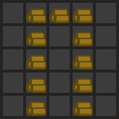
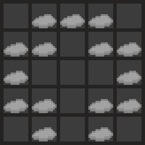
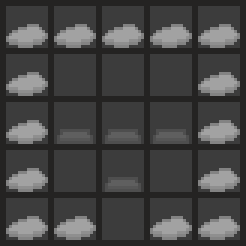
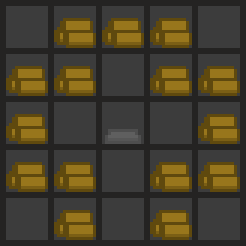
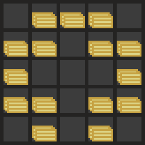
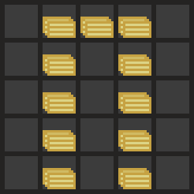
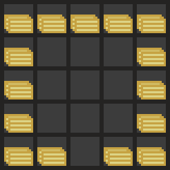

Dead World is an adventure game with a twist - you play in a world made up of a mixture of the worlds of many other players. Every new area you explore is 'loaned' from the server, and when you die they are returned to the server with any changes you make.
By rearranging resources you can construct a variety of useful buildings to help you make your way through the world:
The WORKSHOP can be used to construct simple tools, and get rarer resources.
The SMELTER can be used to forge ore into ingots - used to make weapons and armour.
The FORGE can be used to fashion ingots into weapons and armour.
The SAWMILL can be used to convert logs into planks, to make higher tier buildings.
The THRESHER can be used to extract seeds from some items.
The BAKERY can be used to make consumable bread that restores health.
The FARM can be used to produce maize from seeds.